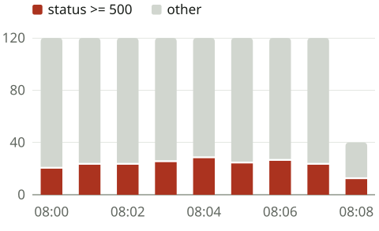
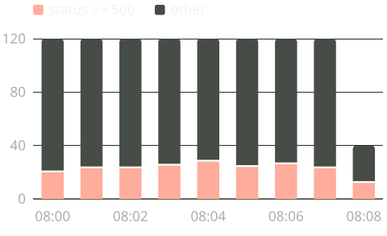
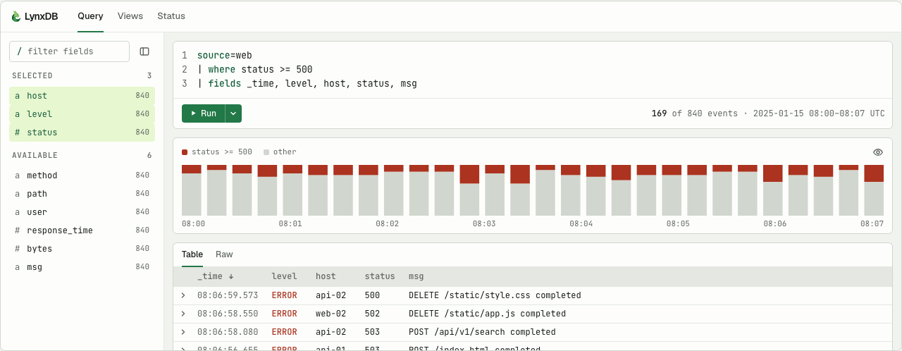
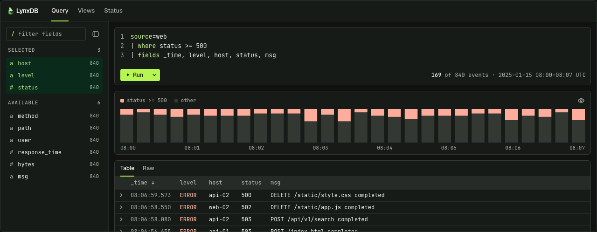

Something breaks, and the evidence is a log file on a host. This post asks such a file five questions with lynxdb query, the pipe mode of LynxDB: it loads the file, runs one PPL query over it and prints the result. Every command below was run with LynxDB 26.11.1.896, and every output is what it printed.
The file
access.log is test data from the LynxDB repository1: 1,000 requests to five hosts, one per line, a timestamp followed by key=value pairs.
$ head -n 2 access.log
2025-01-15T08:00:00.105Z host=web-03 level=ERROR method=GET path=/api/v1/users status=502 user=grace response_time=786 bytes=32228 msg="GET /api/v1/users completed"
2025-01-15T08:00:00.543Z host=api-02 level=ERROR method=DELETE path=/api/v1/search status=502 user=grace response_time=462 bytes=46701 msg="DELETE /api/v1/search completed"There is no schema to declare. LynxDB reads the timestamp into _time and each key=value pair into a field when the query runs, so status and response_time compare as numbers.
How many events, over what time
$ lynxdb query --file access.log --no-stats \
'stats count() as events, min(_time) as first, max(_time) as last'
┌────────┬───────────────────────────────────┬───────────────────────────────────┐
│ events │ first │ last │
├────────┼───────────────────────────────────┼───────────────────────────────────┤
│ 1,000 │ 2025-01-15 08:00:00.105 +0000 UTC │ 2025-01-15 08:08:19.524 +0000 UTC │
└────────┴───────────────────────────────────┴───────────────────────────────────┘
(1 row)A thousand events in eight minutes and twenty seconds, from 08:00:00 to 08:08:19 UTC on 15 January 2025.
Which levels
Without --no-stats, the CLI prints a footer under the table: the rows returned, the time the query took and the events it scanned.
$ lynxdb query --file access.log 'stats count() by level'
┌─────────┬───────┐
│ count() │ level │
├─────────┼───────┤
│ 294 │ ERROR │
│ 359 │ INFO │
│ 347 │ WARN │
└─────────┴───────┘
(3 rows)
───
Rows 3
Took 27ms
Scanned 1,000The time is from an Apple M4 Pro laptop. The rest of this post passes --no-stats to keep the outputs short.
Where the server errors are
204 of the 1,000 requests ended with a status of 500 or more. Three queries narrow them down.
By host
eval adds a field to every event. Here error is 1 for a server error and 0 otherwise, so one stats counts the requests and the errors of each host together. A query this long reads better kept in a file, errors-by-host.ppl:
eval error = if(status >= 500, 1, 0)
| stats count() as requests, sum(error) as errors by host
| eval pct = round(errors * 100.0 / requests, 1)
| sort - pct$ lynxdb query --file access.log --no-stats "$(cat errors-by-host.ppl)"
┌────────┬────────┬──────┬──────────┐
│ host │ errors │ pct │ requests │
├────────┼────────┼──────┼──────────┤
│ api-02 │ 48 │ 22.6 │ 212 │
│ web-02 │ 43 │ 22.3 │ 193 │
│ web-03 │ 41 │ 21.1 │ 194 │
│ web-01 │ 38 │ 19.7 │ 193 │
│ api-01 │ 34 │ 16.3 │ 208 │
└────────┴────────┴──────┴──────────┘
(5 rows)No host stands out: api-02 fails 22.6% of its requests and api-01, the best, 16.3%.
Which paths
$ lynxdb query --file access.log --no-stats 'where status >= 500 | top 3 path'
┌───────┬────────────────┐
│ count │ path │
├───────┼────────────────┤
│ 28 │ /api/v1/users │
│ 27 │ /api/v1/orders │
│ 25 │ /api/v1/health │
└───────┴────────────────┘
(3 rows)top counts the values of a field and keeps the most common. The users, orders and health endpoints lead with 25 to 28 errors each, close together again.
When
$ lynxdb query --file access.log --no-stats \
'where status >= 500 | timechart span=1m count()'
┌───────────────────────────────┬─────────┐
│ _time │ count() │
├───────────────────────────────┼─────────┤
│ 2025-01-15 08:00:00 +0000 UTC │ 20 │
│ 2025-01-15 08:01:00 +0000 UTC │ 23 │
│ 2025-01-15 08:02:00 +0000 UTC │ 23 │
│ 2025-01-15 08:03:00 +0000 UTC │ 25 │
│ 2025-01-15 08:04:00 +0000 UTC │ 28 │
│ 2025-01-15 08:05:00 +0000 UTC │ 24 │
│ 2025-01-15 08:06:00 +0000 UTC │ 26 │
│ 2025-01-15 08:07:00 +0000 UTC │ 23 │
│ 2025-01-15 08:08:00 +0000 UTC │ 12 │
└───────────────────────────────┴─────────┘
(9 rows)Set against all requests per minute (timechart span=1m count() without the where), the errors hold steady: 20 to 28 of the 120 requests in every full minute. Nothing spikes, so the cause is not one bad minute.


From standard input
--file - reads standard input, so the log can come out of another command: kubectl logs, journalctl or ssh to the host. A result of one value prints as the bare value, ready for a shell variable.
$ cat access.log | lynxdb query --file - --no-stats \
'where status >= 500 | stats count() as errors'
204The help text puts the whole of pipe mode in three sentences:
Run a PPL query against a LynxDB server, or with --file against local files. --file - reads standard input. Local input is loaded into the index main, and a local query that names no source reads main.
lynxdb query --helpThe commands in this post
| PPL command | What it did here |
|---|---|
stats |
Counted events, overall or per value of a field (by level, by host) |
where |
Kept the events that match a condition (status >= 500) |
eval |
Added a field to every event, computed from the others |
sort |
Ordered the rows; - pct sorts by pct, highest first |
top |
Listed the most common values of a field with their counts |
timechart |
Counted events per time bucket (span=1m) |
The PPL guide covers the other commands and every function.
Keeping the log on a server
Pipe mode reads the file again for every query. To search the same events later, or logs from many hosts, load them into lynxdb server and run the same PPL against the stored index:
# in one terminal
lynxdb server
# in another
lynxdb ingest access.log --index web
lynxdb query 'source=web | where status >= 500 | top 3 path'

lynxdb server on this file: 169 of the 840 events from 08:00 to 08:07 have a status of 500 or more.More in the server mode guide.
Notes
The file is
testdata/logs/access.login the LynxDB repository. Clone the repository to run the commands as they are, or point them at a log of your own.